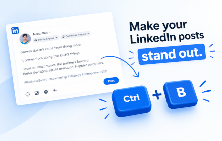
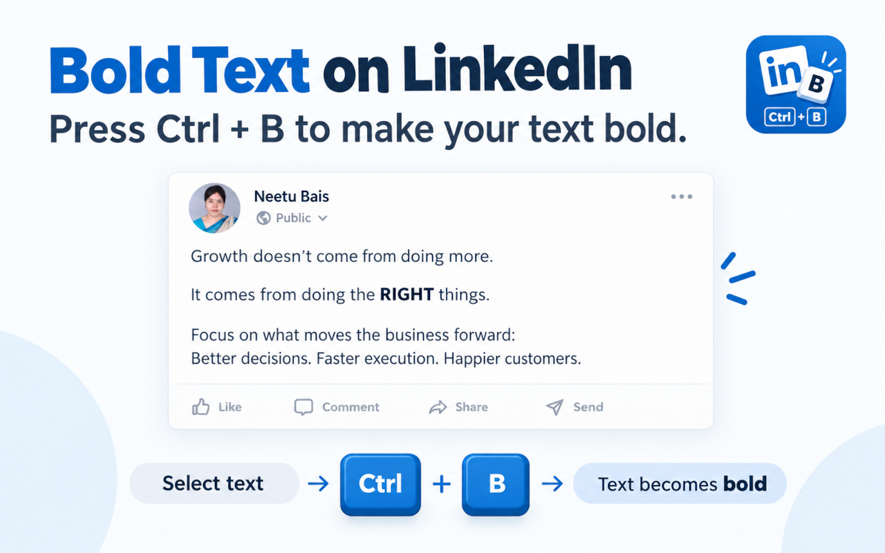

Highlight your text and press Ctrl + B. No copy-pasting from generator websites. No accessibility issues. Just clean native formatting.

Highlight any phrase in the mock LinkedIn editor below. Press Ctrl + B to toggle bold text formatting instantly.
Third-party text generators do not create real bold letters. They replace normal characters with obscure mathematical Unicode symbols. Here is why that breaks your posts.
| Feature & Experience | Native Bold (This Extension) | Fake Unicode (YayText, LingoJam) |
|---|---|---|
|
Screen Reader Accessibility
How visually impaired users hear your post
|
✓ Fully Accessible
Screen readers pronounce words naturally with normal cadence and emphasis.
|
✕ Broken Speech
Screen readers spell out each character as "Mathematical Bold Capital H..." making your content unlistenable.
|
|
LinkedIn Search & Discovery
Whether your post appears in search results
|
✓ 100% Indexed
Standard characters are fully indexed by LinkedIn's search engine and feed algorithm.
|
✕ Invisible to Search
Unicode glyphs do not match normal alphabet queries. Your keywords become unsearchable.
|
|
Workflow Speed
Time required to format your post
|
✓ Instant (0.5s)
Select text, press Ctrl+B or Cmd+B, and keep writing. Zero context switching.
|
✕ Slow (15s+)
Open a new tab, navigate to generator, paste text, copy result, paste back into LinkedIn.
|
|
Mobile & Cross-Platform Display
Consistency across devices and operating systems
|
✓ Native Typography
Uses LinkedIn's native font family. Renders crisply on every iPhone, Android, and PC.
|
✕ Risk of Empty Boxes
Unsupported Unicode symbols often render as missing glyphs or misaligned characters.
|
|
Reversibility & Editing
Fixing a typo or removing formatting
|
✓ Instant Toggle
Press Ctrl+B or Cmd+B again to unbold. Edit text directly without starting over.
|
✕ Must Retype
You cannot easily undo converted characters without retyping or running back to the website.
|
Everything you need for clean, fast LinkedIn formatting. Nothing you don't.
Full keyboard shortcut support across operating systems. Use Cmd + B on macOS and Ctrl + B on Windows and Linux.
Runs 100% locally in your browser. No telemetry, no keystroke tracking, no analytics, and zero external network requests.
Pure vanilla JavaScript. Zero frameworks, zero dependencies, and instant execution that never slows down your browser tabs.
Works everywhere LinkedIn accepts bold formatting: main feed posts, articles, comments, and replies.
Strictly limited to https://www.linkedin.com/*. The extension cannot view or interact with any other website you visit.
Integrates directly with LinkedIn's internal ProseMirror and Tiptap DOM architecture for clean, standards-compliant markup.
Most browser extensions add cluttered toolbars, popups, or floating menus that slow you down. LinkedIn Rich Text Shortcuts works entirely in the background.

Everything you need to know about the extension, compatibility, and privacy.